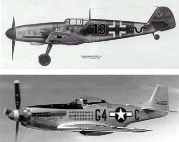
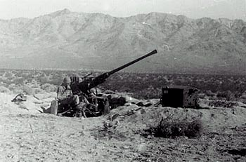
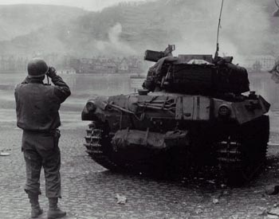
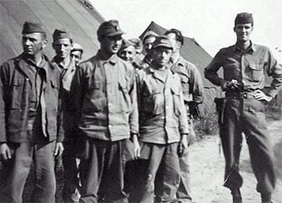

|
gallagherstory.com
World War II Story by Robert F. Gallagher
"Scratch One Messerschmitt" (over
400
pages and 248 photos )
United States Army, 815th Anti-Aircraft
Artillery Battalion, Third Army, European Theater, 1939 - 1945
|
| |
|
Table of Contents
Synopsis
and About the Author
Chapter 1: Chicago Before the War and Pearl Harbor
Chapter 2: Drafted
Chapter 3: Camp Haan, California
Chapter 4: Hooray for Hollywood
Chapter 5: March Air Force Base
Chapter 6: Camp Irwin on the Mojave Desert
Chapter 7: One More Try
Chapter 8: Things Improve
Chapter 9: Getting Ready
Chapter 10: Camp Shanks and New York City
Chapter 11: Life Aboard Ship
Chapter 12: Camp Stapley, England
Chapter 13: Crossing the English Channel
Chapter 14: Camp Twenty Grand, France
Chapter 15: Woippy, France
Chapter 16: Differdange, Luxembourg
Chapter 17: Alzey, Germany
Chapter 18: St. Goar, Germany
Chapter 19: Frankfurt am Main, Germany
Chapter 20: Hanau, Germany
Chapter 21: Wurzburg, Germany
Chapter 22: Regensburg, Germany
Chapter 23: Landau, Germany - War in Europe Ends
Chapter 24: Straubing, Germany
Chapter 25: Camp Tophat, Antwerp, Belgium - War Ends
Chapter 26: Black Market
Chapter 27: Rest and Relaxation
Chapter 28: Military Police Duty
Chapter 29: Back to England and the Trip Home
Chapter 30: Post War
Epilogue
Medals and Patches
Side Effects of the Story Comments
on the Story - Reader Feedback |

German Messerschmitt and American P-51 Mustang.

Training on the 40mm gun in the Mojave desert.

Tank Destroyer fires at the enemy across the Rhine river.

Bob Gallagher (right) and German POWs |
|
Footnotes and
Source of Photographs
|
|
Editor's note:
Bob Gallagher passed away in 2013 at the age of 88.
This site is now
supported by his son - Mark Gallagher
email: gallagher.mark@gmail.com
Copyright, Robert F. Gallagher, 1999 - 2026, all
rights reserved on all images and content. No content from this
story may be reproduced
in any format without the expressed permission of the Mark Gallagher: gallagher.mark@gmail.com
Story originally published in
1999, a major update of the web site completed in 2005 and several updates
in 2009 and 2010.
gallagherstory.com |